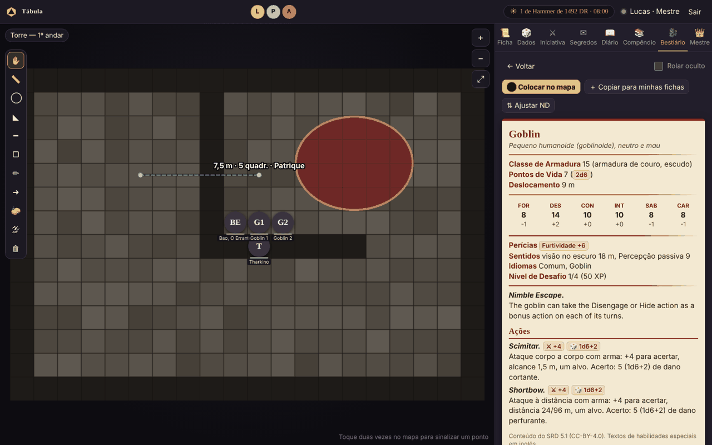
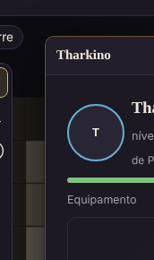
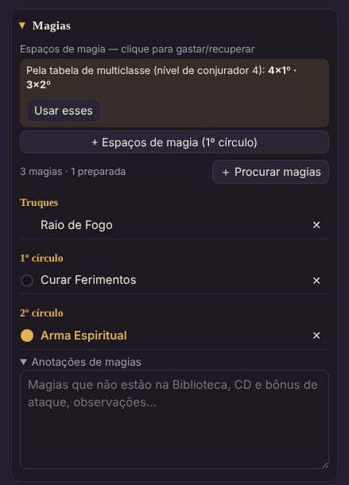
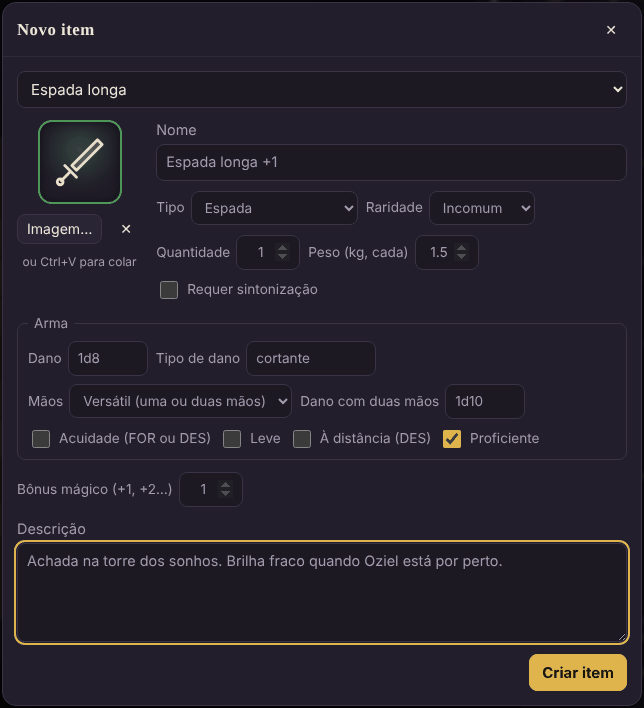
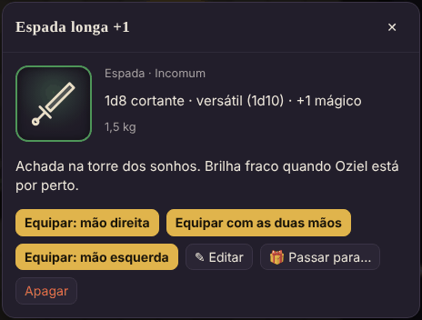

Mapa
| Para… | No computador | No celular |
|---|---|---|
| Andar pelo mapa | arraste o fundo | arraste com um dedo |
| Aproximar e afastar | rodinha do mouse ou pinça do trackpad | pinça com dois dedos |
| Ver o mapa inteiro | botão ⤢ | botão ⤢ |
| Mover o seu token | arraste o token (ele encaixa na grade) | arraste o token |
| Andar um quadrado | clique no token e use as setas | — |
| Sinalizar um ponto ("olha aqui!") | dois cliques no fundo do mapa | dois toques |
| Abrir a ficha de um personagem | dois cliques no token | dois toques no token |
- Cada jogador move só o próprio token. O mestre move todos.
- Dois cliques no token de um colega abrem só o retrato, a vida, as condições e o equipamento dele. 👑 Dois cliques num monstro com ficha abrem o bloco de estatísticas.
- Os jogadores veem a barra de vida dos personagens; dos monstros, só um aro vermelho quando estão com metade da vida ou menos, e o token cinza com ✖ quando caem.
Condições nos tokens
As condições (envenenado 🤢, caído ⤵, amedrontado 😱, concentração 🔮…) aparecem como ícones no token, para todos. O jogador marca na própria ficha; 👑 o mestre marca clicando no token e escolhendo no painel.
Vista 3D

O botão 3D (abaixo do ⤢, no canto do mapa) transforma o mapa num tabuleiro: o mapa da cena vira o chão e cada token vira uma miniatura. Cada pessoa liga ou desliga para si (a escolha fica guardada no navegador); dá para o mestre jogar em 2D e a TV mostrar em 3D, por exemplo.
| Para… | No computador | No celular |
|---|---|---|
| Andar pelo tabuleiro | arraste o fundo | arraste com um dedo |
| Girar a câmera | arraste com o botão direito | gire com dois dedos |
| Aproximar e afastar | rodinha do mouse, + e − | pinça com dois dedos |
| Vista de cima ⇄ inclinada | botão ⊙ | botão ⊙ |
| Ver o mapa inteiro | botão ⤢ | botão ⤢ |
| Mover o seu token | arraste a miniatura (ela anda até lá e encaixa na grade) | arraste a miniatura |
| Abrir a ficha | dois cliques na miniatura | dois toques |
| Sinalizar um ponto | dois cliques no chão | dois toques no chão |
Como cada token aparece:
- Com modelo 3D (arquivo .glb): a miniatura de verdade, com sombra, virada para onde anda. Se o modelo tiver
animações chamadas idle (parado) e walk (andando), elas tocam sozinhas.
- Sem modelo: a imagem do token em pé, como uma miniatura de papelão, sempre virada para a câmera, numa base da
cor do jogador. Ela dá um pulinho enquanto anda.
- Base vermelha escura: o monstro está com metade da vida ou menos. Com 0 PV a miniatura tomba.
- Anel dourado pulsando: é o turno dele na iniciativa. Anel branco: token selecionado.
- 👑 Tokens ocultos aparecem transparentes para o mestre (os jogadores não os veem).
- A névoa de guerra cobre o chão (para o mestre, meio transparente), e os desenhos salvos aparecem no chão.
Pôr um modelo 3D: - Personagem: na ficha, em Miniatura 3D, clique Enviar .glb…. Usar o exemplo põe um aventureiro simples que vem com a Tábula, só para experimentar. - 👑 NPC ou monstro: clique no token e use 🧊 Miniatura 3D no painel; ou ponha o modelo na ficha do bestiário, e todos os tokens dessa ficha passam a usá-lo. - Tamanho ajusta a altura (modelos vêm em escalas diferentes) e ↺ ↻ viram a miniatura de 45 em 45 graus, para quando ela anda "de costas". - Onde arranjar modelos: arquivos .glb (glTF binário) — há muitos gratuitos no Sketchfab (veja a licença de cada um), e o Blender exporta qualquer modelo para .glb. Modelos para impressão 3D (.stl) vêm sem cor e precisam ser convertidos antes. Limite de 40 MB por arquivo; modelos leves (até uns 5 MB) carregam mais rápido nos celulares.
Ferramentas: régua, desenho e névoa continuam na vista 2D — desligue o 3D para usá-las (o que você fizer aparece no 3D na hora). Num celular mais simples, a vista 3D gasta mais bateria; o 2D continua leve como sempre.
Ferramentas do mapa
A barra à esquerda do mapa. Clique numa ferramenta para usá-la; clique de novo (ou Esc) para voltar a ✋ Mover. Tudo que é medido usa a regra do Livro do Jogador: cada quadrado vale 1,5 m e a diagonal conta como um quadrado.
| Ferramenta | Como usar | Quem vê | |
|---|---|---|---|
| ✋ | Mover | o modo normal: arrastar tokens e o mapa | — |
| 📏 | Régua | arraste de um ponto a outro; mostra metros e quadrados. Ao soltar, ela some | todos, ao vivo, com o seu nome |
| ◯ | Esfera / círculo | arraste do centro até a borda; mostra o raio (ex.: bola de fogo, raio 6 m = 4 quadrados) | todos; fica no mapa |
| ◣ | Cone | arraste da sua posição na direção do cone; o comprimento é o tamanho (ex.: mãos flamejantes, 4,5 m) | todos; fica no mapa |
| ━ | Linha | arraste da origem na direção; 1,5 m de largura (ex.: relâmpago, 30 m) | todos; fica no mapa |
| ▢ | Cubo / quadrado | arraste de um canto até o outro; mostra o lado | todos; fica no mapa |
| ✏ | Desenho livre | desenhe com o mouse ou o dedo | todos; fica no mapa |
| ➜ | Seta | arraste do começo até a ponta ("vou por aqui") | todos; fica no mapa |
| 🧽 | Borracha | toque num desenho para apagá-lo | — |
| 🗑 | Limpar | o jogador apaga os seus desenhos; 👑 o mestre apaga todos os da cena | — |
| 🌫 | Névoa (👑) | veja abaixo | — |

- As áreas e os desenhos ficam na cena até alguém apagar. Cada um apaga os seus; 👑 o mestre apaga qualquer um.
- Os tamanhos das áreas arredondam para quadrados inteiros, como no jogo de mesa.
- Dica: para mirar um cone ou uma linha, comece no seu token e arraste até o alvo.
🌫 Névoa de guerra (👑)

- Clique em 🌫 na barra. Aparece a barra da névoa no topo do mapa.
- Marque Ligada: o mapa inteiro fica coberto para os jogadores.
- Escolha como revelar e arraste no mapa:
- ▭ Revelar: um retângulo (uma sala, um corredor);
- ◯ Revelar: um círculo (o alcance de uma tocha, o que se vê de um ponto);
- ▭ Esconder: cobre de novo um retângulo (o grupo saiu da sala e você quer escondê-la).
- ↶ desfaz o último passo. Cobrir tudo recomeça do zero; Revelar tudo tira a névoa toda.
- Para você a névoa é translúcida (você continua vendo o mapa); para os jogadores ela é escura.
- Monstros dentro da névoa nem chegam ao navegador dos jogadores, então não dá para "espiar". Os personagens dos jogadores aparecem sempre.
- Desligar Ligada tira a névoa sem perder o que você revelou; ligar de novo volta como estava.
Ficha
O jogador vê e edita só a ficha dele; 👑 o mestre vê e edita todas (os retratos no topo trocam de ficha). Tudo salva sozinho: ao lado de "Achar no mapa" aparece ✓ Salvo.
Ficha em janela

- ⧉ Em janela (ao lado de "Achar no mapa"), ou dois cliques no token, abre a ficha numa janela por cima do mapa.
- Arraste pelo título para mover; puxe o canto de baixo para mudar o tamanho; dois cliques no título encolhem a janela só na barra; ✕ fecha. A posição e o tamanho ficam lembrados.
- 👑 O mestre pode abrir uma janela para cada jogador e deixar lado a lado. Também abre pelo ⧉ na lista de personagens (aba Mestre) ou por 📜 Ficha no painel do token.
- O grupo: no topo da sua ficha ficam os retratos dos colegas. Clicar abre o equipamento deles, só para olhar.

- No celular não há janelas: a ficha abre na aba Ficha, como sempre.Rolar dados pela ficha
- Clique num número para rolar: atributos, resistências (o quadradinho marca proficiência), perícias (○ sem proficiência, ● proficiente, ◉ especialista), iniciativa e ataques.
- Próximo d20: escolha Vantagem ou Desvantagem antes de clicar. Vale para a próxima rolagem de d20 e volta ao normal.
Pontos de vida
Digite um número no campinho e clique Dano (gasta primeiro os PV temporários) ou Cura. A barra muda de cor com metade da vida e quando chega a 0.
Classe, dado de vida e PV por nível
- No campo Classe, escolha da lista (ou digite: "Guerreiro (Campeão)" também serve). A ficha já define o dado de vida da classe: d12 bárbaro; d10 guerreiro, paladino e patrulheiro; d8 bardo, bruxo, clérigo, druida, ladino, monge e artífice; d6 feiticeiro e mago. Classe inventada: escolha o dado à mão em Dados de vida.
- ❤ PV pela classe (embaixo dos PV) liga o cálculo automático, como no Livro do Jogador: no 1º nível, o máximo do dado + CON; a cada nível seguinte, a rolagem do dado (ou a média fixa, arredondada para cima: d6 4, d8 5, d10 6, d12 7) + CON. Cada nível dá pelo menos 1 PV.
- Ao subir de nível (mude o campo Nível), aparece ⬆ Nº nível: ganhe os PV com 🎲 Rolar e Média. A rolagem é feita pela mesa e aparece no chat para todos; os PV máximos e os atuais sobem juntos. Subiu vários níveis de uma vez? O quadro aparece para cada um.
 - Com o cálculo ligado, os PV máximos ficam dourados e não se digitam: eles seguem o nível, o dado e a CON.
Se a CON subir, os PV sobem 1 por nível, como manda a regra.
- Bônus/nível: PV extras por nível, como o do anão da colina (+1) ou do talento Robusto (+2).
- 👑 O mestre escolhe a regra da mesa em Mestre → Jogadores e personagens → Regras da mesa: o jogador escolhe,
sempre rolar ou sempre a média. Na ficha de cada personagem, o mestre pode ↶ desfazer a última rolagem de PV
ou desligar o cálculo e voltar aos PV digitados à mão.
- Com o cálculo ligado, os PV máximos ficam dourados e não se digitam: eles seguem o nível, o dado e a CON.
Se a CON subir, os PV sobem 1 por nível, como manda a regra.
- Bônus/nível: PV extras por nível, como o do anão da colina (+1) ou do talento Robusto (+2).
- 👑 O mestre escolhe a regra da mesa em Mestre → Jogadores e personagens → Regras da mesa: o jogador escolhe,
sempre rolar ou sempre a média. Na ficha de cada personagem, o mestre pode ↶ desfazer a última rolagem de PV
ou desligar o cálculo e voltar aos PV digitados à mão.
Multiclasse

- Na ficha, clique ＋ Multiclasse (logo abaixo do nome). Aparece a lista de classes, com a atual em primeiro.
- Escreva a nova classe (ou escolha da lista): o dado de vida dela se ajusta sozinho. Mude o nível de cada classe ali; ＋ Outra classe acrescenta mais uma e ✕ tira uma (os níveis e os PV dela saem junto).
- O cabeçalho passa a mostrar "Paladino 2 / Mago 1" e o nível total (que vale para o bônus de proficiência e para o XP). Classe e nível do cabeçalho ficam só de leitura: quem manda é a lista.
O que a ficha faz por você na multiclasse: - PV: os do 1º nível vêm da primeira classe (a marcada 1ª). Cada nível novo de qualquer classe usa o dado daquela classe: o quadro mostra "⬆ Mago 1: ganhe os PV" com 🎲 Rolar 1d6 ou a média. - Dados de vida: um monte por tipo de dado (paladino 5 / clérigo 5 = cinco d10 e cinco d8), cada um com o seu botão ☕ Gastar 1. O descanso longo devolve metade do total, começando pelos maiores. - Requisitos: se faltar o atributo 13 que a regra pede (por exemplo, Inteligência 13 para mago), aparece um aviso. Ele não bloqueia nada, para o mestre poder liberar. - Espaços de magia: em Magias, a ficha sugere os espaços pela tabela de conjurador multiclasse (classes completas somam o nível; paladino e patrulheiro, metade; cavaleiro arcano e trapaceiro arcano, um terço; artífice, metade para cima). Usar esses aplica. O bruxo aparece à parte, com a Magia de Pacto. - A mesma sugestão de espaços funciona com uma classe só, pela tabela da própria classe.
Condições, inspiração e testes contra a morte
- Toque nos ícones para marcar as condições; elas aparecem no seu token.
- ✨ Inspiração quando o mestre der.
- Com 0 PV aparece o quadro ☠ Testes contra a morte. 🎲 Rolar faz o teste e marca sozinho: 10 ou mais é sucesso, menos de 10 é falha, 1 natural conta duas falhas e 20 natural volta com 1 PV. Três sucessos: estável. Três falhas: morte. Zerar limpa as marcas.
Magias da ficha

Dentro de Magias, abaixo dos espaços, fica a lista de magias do personagem, separada em Truques, 1º círculo, 2º círculo… ＋ Procurar magias abre a Biblioteca já filtrada pelas suas classes. Em cada magia: - toque no nome para ver o cartão completo (tempo, alcance, componentes, duração, efeito, níveis superiores); - a bolinha marca a magia como preparada (fica dourada; o resumo conta quantas estão preparadas); - ✕ tira da ficha.
Magias que não estão na Biblioteca (de outros livros, ou inventadas pelo mestre) vão em Anotações de magias, logo abaixo — é o mesmo campo de texto das versões antigas, então o que você já tinha escrito continua lá.
Espaços de magia
Dentro de Magias: + Espaços de magia cria os do 1º círculo; + Espaço de 2º círculo e assim por diante. Em cada círculo, + e − mudam quantos você tem; toque nas bolinhas para gastar e recuperar. O descanso longo recupera todos. Para conjuradores, a ficha sugere os espaços pela tabela da classe (ou da multiclasse): Usar esses aplica.
Dados de vida e descanso curto
O dado vem da classe (dá para trocar à mão, para classes inventadas). No descanso curto, ☕ Gastar 1 rola o dado + CON e a cura entra direto nos PV. Você tem tantos dados quanto o seu nível; o descanso longo devolve metade. Na multiclasse, cada tipo de dado tem o seu monte (veja Multiclasse).
Experiência e moedas
Digite o XP; a barra mostra quanto falta para o próximo nível e aparece um aviso quando já dá para subir. As moedas são PC (cobre), PP (prata), PE (electrum), PO (ouro) e PL (platina).
Aspecto mágico e anel
Dois quadros logo abaixo dos PV. 👑 Só o mestre escreve: o mês de nascimento, o nome, o efeito do nível 1 ao 4 e o efeito a partir do nível 5. O jogador lê na ficha; quando o personagem chega ao nível 5, a versão melhorada aparece no lugar.
Colar imagem (Ctrl+V)
Copie uma imagem (do navegador, de um print) e aperte Ctrl+V com a ficha aberta: ela vira o retrato e o token. O mesmo vale numa janela de ficha (clique nela antes), no editor de item e nas fichas do bestiário.
Equipamento e mochila
Na ficha, em Equipamento e mochila: o boneco com os espaços do corpo, um resumo (CA, sintonia, carga) e a mochila embaixo.

Criar um item

- + Item (embaixo do boneco).
- Modelo (opcional): escolha uma arma, armadura ou equipamento do Livro do Jogador. Os campos se preenchem (dano, propriedades, CA, peso). Depois mude o que quiser, como o nome ("Espada longa +1").
- Confira tipo, raridade, quantidade, peso e se requer sintonização.
- Para armas: dano, tipo de dano, mãos (uma, duas ou versátil, com o dano de duas mãos), acuidade, leve, à distância e proficiente. Para armaduras: o tipo (leve, média, pesada) e a CA base. Para escudos: o bônus de CA (+2).
- Bônus mágico (+1, +2…): nas armas soma no ataque e no dano; em armaduras e escudos, na CA. Bônus na CA serve para anéis, mantos e outros itens que dão CA (Anel de Proteção +1).
- Descrição: o que o item faz, cargas, de onde veio.
- Criar item.
A imagem: cada tipo de item tem um desenho próprio (espada, arco, cajado, escudo, elmo, anel, poção…) e a borda tem a cor da raridade: cinza (comum), verde (incomum), azul (raro), roxo (muito raro), laranja (lendário), vermelho (artefato). Para pôr a arte final, use Imagem… ou cole com Ctrl+V no editor; ✕ volta ao desenho.
Usar um item

Toque num item (na mochila ou no boneco) para ver os detalhes e escolher:
- Equipar: o item vai para o espaço certo. Armas perguntam a mão; armas versáteis oferecem com as duas mãos; anéis vão no espaço de anel livre.
- ↩ Guardar na mochila: tira do corpo.
- 🙌 Usar com as duas mãos / ✋ com uma mão (arma versátil na mão direita).
- ✦ Sintonizar / ✧ Desfazer a sintonia (itens que exigem sintonia).
- ✎ Editar, Separar 1 (de uma pilha, ex.: uma das 3 poções), 🎁 Passar para… e Apagar.
Também dá para tocar num espaço vazio do boneco: aparece a lista dos itens da mochila que servem ali. No computador, arraste itens da mochila para os espaços, de um espaço para outro, ou de volta para a mochila.
Regras que a ficha cuida para você
- Duas mãos: uma arma de duas mãos ocupa as duas; a mão esquerda aparece bloqueada. Equipar algo na mão esquerda tira a arma de duas mãos (ou, se for versátil, faz ela voltar a uma mão).
- Sintonia: no máximo 3 itens sintonizados (as bolinhas roxas no resumo). Item que exige sintonia só dá o bônus mágico quando está sintonizado.
- CA automática: com armadura, escudo ou um item que dá CA equipado, a CA da ficha se calcula sozinha e fica dourada. Armadura leve soma a DES; média soma a DES até +2; pesada não soma. Escudo +2. Sem nada disso equipado, vale a CA que você digitou. Se a sua classe calcula diferente (bárbaro, monge), desmarque automática no resumo e digite a CA.
- Ataques: as armas equipadas aparecem em Ataques com o bônus (atributo + proficiência + mágico) e o dano já calculados: armas à distância usam DES, com acuidade usam o maior entre FOR e DES. A arma da mão esquerda, com outra na direita, é o ataque da ação bônus e não soma o modificador ao dano. Para mudar, edite o item.
- Carga: soma o peso de tudo contra a sua capacidade, 7,5 × Força em kg. A barra fica vermelha se passar.
Dar e trocar itens
- 👑 Na ficha de um jogador, o botão vira 🎁 Dar item: o item é criado direto na mochila dele, e ele recebe um aviso.
- Jogadores trocam itens com 🎁 Passar para…: escolha o personagem e quantos. O item chega desequipado e o dono recebe um aviso.
- Os colegas veem o que você tem equipado, nunca a sua mochila.
- O que não cabe como item (dívidas, coisas guardadas na estalagem) vai em Anotações do inventário.
Dados
- Os botões d4 a d100 rolam um dado. O d20 respeita a vantagem/desvantagem escolhida.
- Ou digite no campo de mensagem e aperte Enviar:
| Você digita | O que acontece |
|---|---|
1d20+5 |
rola 1d20 e soma 5 |
2d6+1d4-1 |
soma vários dados |
2d20kh1 / 2d20kl1 |
vantagem / desvantagem (fica com o maior / menor) |
4d6kh3 |
4d6 e fica com os 3 maiores (criar atributos) |
d% |
1d100 |
/r 1d8+3 espada |
rola e põe um nome na rolagem |
| qualquer outro texto | vira mensagem no chat |
- Rolagem secreta: só você e o mestre veem. 👑 Para o mestre, rolagem oculta: só ele vê.
- Toda rolagem aparece num cartão ao lado do painel, para todos que podem vê-la. Desligue em Rolagens na tela.
- Os dados são rolados no servidor, então ninguém consegue "escolher" o resultado.
Iniciativa
- Os jogadores clicam 🎲 Rolar minha iniciativa (usa a DES e o bônus extra da ficha).
- 👑 + Todos os tokens da cena rola para quem ainda não está na lista (monstros ocultos continuam ocultos). Dá para editar o valor de cada um direto na lista.
- 👑 ⚔ Começar combate. A ordem aparece no topo do mapa para todos, com a vez destacada.
- A cada turno, Próximo ▶ (o mestre) ou Terminei meu turno ➜ (o jogador da vez). ◀ Anterior volta.
- 👑 Encerrar limpa a lista.
Segredos e fila de memórias
Para memórias, pistas, cartas e mapas do tesouro que só um jogador deve ver.

- 👑 Novo segredo: título, texto e imagem (opcional) → Criar segredo. Depois escolha quem vê: Todos ou jogadores específicos. Quem recebe é avisado na hora; os outros não veem nada.
- 👑 Fila de memórias: ao criar, escolha Pôr na fila de memórias de…. Na caixa 🧠 Fila de memórias, reordene com ↑ ↓ e, na hora certa, clique Liberar próxima ➜: só a primeira da fila chega ao jogador. Liberar a próxima de cada um faz isso para todos ao mesmo tempo. ✕ tira da fila sem apagar.
- O jogador vê os segredos dele na aba ✉ Segredos (o número na aba avisa quando chega um novo).
Diário e compêndio
- 📖 Diário do grupo: todos escrevem (pistas, nomes, dívidas, piadas internas). Cada um edita e apaga o que é seu; 👑 o mestre pode apagar qualquer entrada. O número na aba mostra o que os outros escreveram desde a sua última visita.
- 📚 Compêndio → 📄 Páginas: 👑 páginas de consulta do mestre, com título, categoria, texto e imagens (dá para pôr o print de uma tabela). 🔒 Só eu (mestre) para as suas notas; 👁 Todos os jogadores para liberar. Os jogadores leem e buscam as páginas liberadas. É aqui que entra a lore do seu mundo.
- 📚 Compêndio → ✨ Magias / 🎒 Itens: a Biblioteca.
Biblioteca: magias e itens
No 📚 Compêndio, as abas ✨ Magias e 🎒 Itens trazem o conteúdo do SRD 5.1 (a parte das regras que a Wizards liberou com licença aberta) traduzido para o português, com os nomes do Livro do Jogador. A aba 📄 Páginas continua sendo o lugar das páginas do mestre (lore, regras da casa, NPCs).
Magias
- Para: escolha o personagem (o jogador já vem com o dele). Com Só as que pode conjurar marcado, a lista mostra só as magias das listas das classes da ficha, até o círculo que cada classe já alcança — na multiclasse, cada classe conta com o próprio nível (um Clérigo 3 / Mago 1 vê clérigo até o 2º círculo e mago até o 1º). Cavaleiro arcano e trapaceiro arcano usam a lista do mago; o bruxo mostra a Arcana Mística (6º a 9º) a partir do nível 11. A frase em cinza abaixo dos filtros diz exatamente o que está sendo considerado.
- Busque pelo nome em português ou em inglês; filtre por círculo (Truques, 1º…), por classe, por escola, e só rituais ou só concentração. C e R na linha marcam concentração e ritual.
- Toque na magia para abrir o cartão e clique ＋ Adicionar à ficha de …. O ✓ marca as que já estão na ficha. Magias fora das listas da ficha também podem ser adicionadas (um talento, um item, uma decisão do mestre); o cartão avisa que estão fora.
- 👑 O mestre escolhe qualquer personagem em Para, ou — só consultar — para ler sem filtro.
As 319 magias do SRD estão lá. Magias de outros livros (Xanathar, Tasha…) não fazem parte do SRD; escreva-as em Anotações de magias na ficha. O artífice não está no SRD; a lista dele foi montada com as magias do SRD que ele aprende no Caldeirão de Tasha para Tudo.
Itens
- Categorias: Armas, Armaduras, Equipamento, Ferramentas, Pacotes e Montarias e veículos, com preço, peso e, nas armas e armaduras, dano, propriedades e CA.
- ＋ Pôr na mochila de … cria o item na ficha já preenchido: a arma entra pronta para o ataque automático, a armadura e o escudo entram na CA automática quando equipados. Escolha a Qtd. antes; itens iguais que não vão no corpo (tochas, rações, flechas) juntam na mesma pilha.
- Pacotes (de aventureiro, explorador…) põem o conteúdo na mochila, item por item.
- Montarias e veículos viram uma posse que não conta no peso carregado.
- O jogador só põe itens nos próprios personagens; 👑 o mestre põe em qualquer um, e o dono recebe o aviso 🎁.
Itens mágicos (👑)
Só o mestre vê o botão ✨ Itens mágicos 🔒. Filtre pela raridade, escolha o personagem em Para e clique 🎁 Dar a …. Itens que servem em qualquer arma ou armadura (Arma +1, Língua flamejante, Armadura +2…) pedem a Base (cimitarra, cota de malha…) e já entram com o dano, a CA e o bônus mágico certos; a sintonização também vem marcada. Os nomes estão em português (os do Livro do Mestre); a descrição ainda está no original em inglês do SRD — dá para trocar pelo texto do livro editando o item depois de dar.
Calendário e descansos (👑)

A data e a hora do mundo ficam no topo da tela, para todos. 👑 Clique nelas para:
- Passar o tempo: +10 min, +1 hora, +8 horas, +1 dia, +1 semana (dez dias, como em Faerûn), −1 hora.
- ☕ Descanso curto: passa 1 hora e avisa no chat; cada jogador gasta os dados de vida na própria ficha.
- 🌙 Descanso longo: passa 8 horas e, para os personagens dos jogadores, enche os PV, recupera os espaços de magia, devolve metade dos dados de vida e zera os testes contra a morte.
- Definir a data: dia, mês, ano e hora → Aplicar.
- Meses do mundo: um por linha,
Nome | dias(e| festivalpara os dias festivos). O padrão é o calendário de Harptos, com a era DR; troque pelos meses do seu mundo e Salvar meses.
Bestiário (👑)

- Biblioteca SRD: 334 monstros prontos. Busque em português ou inglês, ou filtre por ND. Abra um e escolha ⬤ Colocar no mapa ou + Copiar para minhas fichas (para editar antes).
- + Nova ficha: crie um NPC ou monstro do zero. Preencha Atq e Dano nas ações para ganhar botões de rolar.
- ⬤ Colocar no mapa: quantos, PV (média ou rolados para cada um) e se ficam ocultos. Os tokens ganham número (Goblin 1, Goblin 2…) e o tamanho certo; a janela mostra a dificuldade do encontro.
- ⇅ Ajustar ND: escolha o ND novo e compare lado a lado. Salvar como nova ficha cria uma variante sem mexer no original.
- Dificuldade do encontro: fácil, médio, difícil ou mortal, pelos limites de XP do Livro do Mestre, no painel do mestre e ao colocar monstros.
- 🖼 Imagens em lote: escolha várias imagens de uma vez; o nome do arquivo diz de qual monstro é
(
goblin.png,Lobo.jpg,adult-red-dragon.webp). Para uma ficha só, cole com Ctrl+V. - Painel do token: clique num token de monstro para ver a ficha, rolar os ataques, aplicar dano e cura e marcar condições.
Painel do mestre (👑)
Aba 👑 Mestre:
- Jogadores e personagens: crie a conta de cada jogador (nome e senha) já com o personagem; troque o dono de um personagem; 🔑 troca a senha; Ficha e ⧉ abrem a ficha. O papel Telão (só assiste) serve para uma TV no jogo presencial.
- Cenas (mapas): dê um nome, informe Quadrados na largura do mapa (quantos quadrados o desenho tem na horizontal) e Escolher imagem e criar. Mostrar põe a cena para o grupo ver (ela fica marcada No ar).
- Cena ativa (grade): ajuste os quadrados, o deslocamento da grade, mostrar a grade e encaixar os tokens.
- Tokens: coloque e tire os personagens do mapa; crie NPCs simples (nome, PV, tamanho, imagem); Oculto prepara uma emboscada (o token fica semitransparente para você e invisível para os jogadores).
- Sessão e backups: 💾 Criar ponto agora, a lista de pontos salvos (automáticos a cada 30 minutos, na abertura e no fim da sessão), Restaurar, ⬇ Baixar e 📂 Carregar arquivo…. No fim, ⏻ Salvar e encerrar a sessão salva tudo e avisa os jogadores.
Atalhos de teclado
Fora de campos de texto:
| Tecla | Faz |
|---|---|
| R ou M | régua |
| C | círculo (esfera) |
| D | desenho livre |
| Esc | volta para ✋ Mover (e fecha janelas de diálogo) |
| Setas | andam um quadrado com o token selecionado |
| Ctrl+V | cola uma imagem na ficha, na janela de ficha, no item ou na ficha do bestiário abertos |